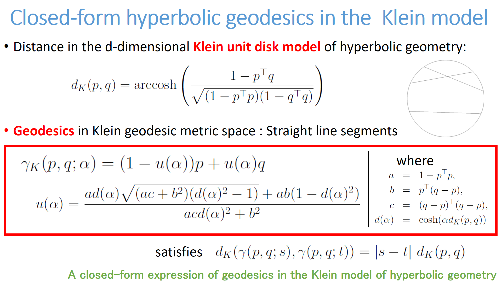
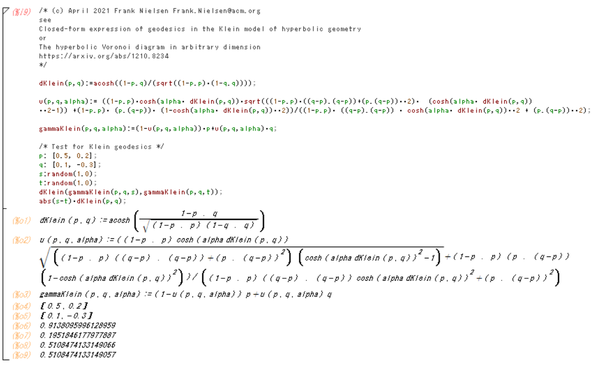
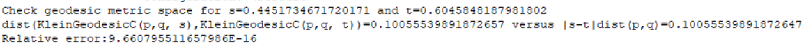

<h1>Klein geodesics: Closed form formula</h1>

<center>

</center>

<ul>

<li><A HREF="ClosedFormKleinGeodesics.pdf" 
target="_blank">Closed-form expression of geodesics in the Klein model of hyperbolic geometry</A>.
 See <A HREF="https://arxiv.org/abs/1210.8234" 
target="_blank">The hyperbolic Voronoi diagram in arbitrary dimension</A> (arXiv:1210.8234)

<li>Demo <A HREF="KleinGeodesics-demo-maxima.txt" 
target="_blank">code KleinGeodesics-demo-maxima.txt</A> in <A HREF="https://maxima.sourceforge.io/" target="_blank">Maxima</A> (computer algebra system, symbolic calculation)
<BR>
<center>

</center>

<li>Demo <A HREF="SimpleKleinGeodesic.java" 
target="_blank">code SimpleKleinGeodesic.java</A> in Java

<center>

</center>


</ul>

<HR>
(C) 2021 Frank Nielsen